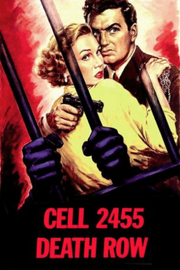

Country:United States, 77 minutes
Spoken languages:English
Genres:Crime, Drama
Director(s):Fred F. Sears
Writer(s):Caryl Chessman, Jack DeWitt
Video Codec:Unknown
Number: 2523


Certification:NR
Storyline:
A Death Row inmate uses his prison law studies to fight for his life. Based on a true story.
Cast:


Medium: Original DVD,
Comments: Part of: Tales From The Prison Yard - 6 Film Collection
Loaned: No
Aspect ratio: Unknown